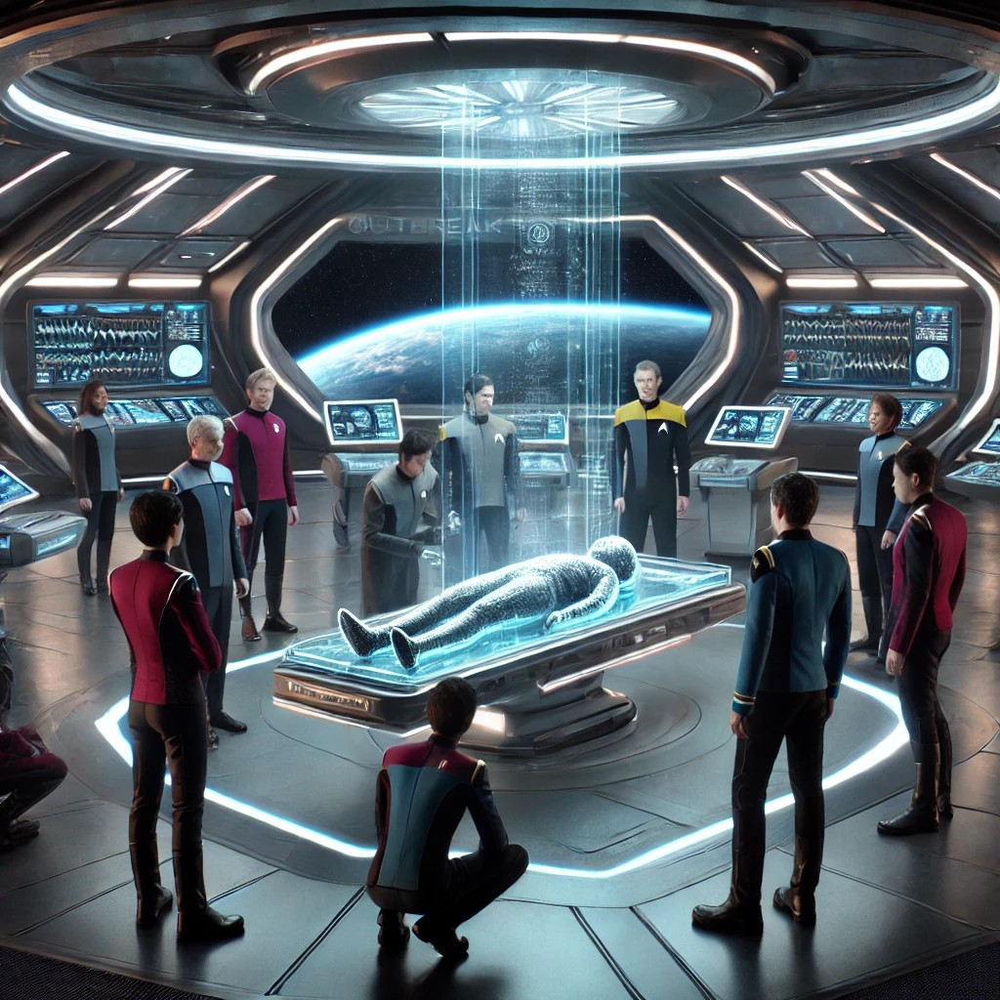
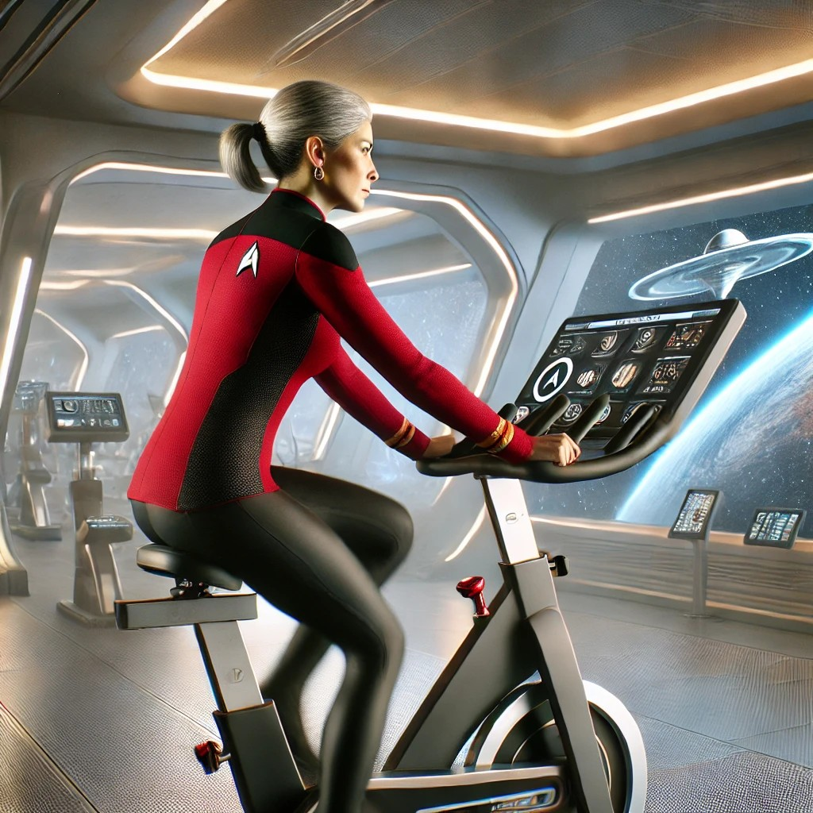
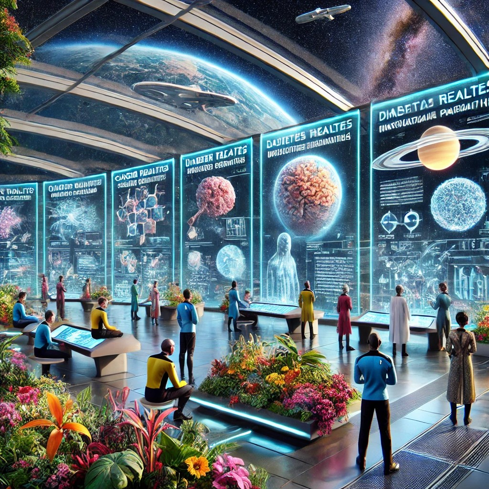

Respuesta a un Brote Epidémico
¡Bienvenidos, cadetes!
Tras una exitosa misión en el planeta Épsilon Prime, un brote epidémico ha surgido entre la tripulación. Tu misión es diagnosticar, contener y tratar esta enfermedad desconocida, todo mientras mantienen la calma y aseguran el bienestar integral de todos a bordo.
En el espacio profundo, la salud de la tripulación depende de su capacidad para actuar rápidamente y con precisión. No hay ayuda externa; ustedes son la primera y última línea de defensa.

Prepárense para demostrar su ingenio y espíritu de equipo. ¡La salud de su tripulación y el éxito de la misión dependen de ustedes!
¡Adelante, cadetes! El desafío los espera.
La salud no es la ausencia de enfermedad
Imagínate como parte de la tripulación de la USS Enterprise, navegando por las profundidades del espacio. En este entorno desconocido, mantener la salud de cada miembro de la tripulación es crucial para el éxito de la misión. ¿Cómo manejarías la prevención de enfermedades cuando estás a millones de kilómetros de la Tierra? ¿Qué prácticas saludables son esenciales en un lugar donde la gravedad cero afecta al cuerpo y el confinamiento prolongado puede impactar la mente?

Ahora, piensa en nuestra vida en la Tierra. Aunque no enfrentamos los mismos desafíos que en el espacio, también tenemos que cuidarnos frente a problemas como el estrés, la contaminación y los hábitos poco saludables. En esta actividad, tú y tu compañero descubrirán que la salud es más que evitar enfermedades; es un equilibrio que incluye el bienestar físico, mental y social.
Prepárate para un viaje de descubrimiento donde aprenderás a cuidar mejor de ti mismo y de los demás, ya sea en la Tierra o más allá de las estrellas. ¡Vamos a explorar juntos cómo podemos vivir de manera más saludable en cualquier parte del universo!
Congreso Interplanetario de Avances Médicos
En el universo de Star Trek, la exploración no solo se realiza en el espacio exterior, sino también en los campos de la ciencia y la medicina. En el Congreso Interplanetario de Avances Médicos, los mejores médicos y científicos de la Federación se reúnen en la Estación Espacial Deep Space Nine para compartir los avances más recientes en el tratamiento y prevención de enfermedades humanas, como el cáncer, la diabetes, las enfermedades cardiovasculares y los trastornos mentales.

Aquí, exploraremos cómo tecnologías revolucionarias, como los nanobots y los páncreas artificiales, están transformando la medicina. Este congreso no solo aborda innovaciones, sino que también subraya la importancia de la medicina preventiva para la salud física y mental, crucial en misiones espaciales de larga duración.
Al participar, ustedes se convierten en pioneros de la salud, llevando estos conocimientos a bordo de naves estelares y más allá, asegurando un futuro más saludable para todos. ¡Prepárense para un viaje de conocimiento, innovación y colaboración en esta frontera final de la medicina!